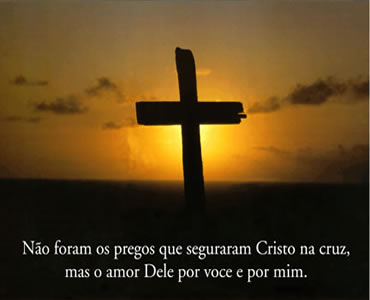

DEUS
Por que estamos aqui?
Um filósofo e físico alemão chamado Jacob Boehme passou por experiências místicas em toda a sua juventude, culminando em epifania no ano de 1600 que teria lhe revelado a estrutura espiritual do mundo, assim como as relações entre o bem e o mal.
Na época, ele decidiu não divulgar a sua experiência e continuou trabalhando como sapateiro, constituindo família e tendo quatro filhos. Entretanto, após uma outra visão em 1610, ele começou a escrever sua primeira obra, Aurora (Die Morgenroete im Aufgang). O tratado foi publicado e divulgado em forma de manuscrito até que uma cópia caiu nas mãos de Gregorious Ritcher, principal pastor de Görlitz, que o considerou herético, e ameaçou exilar Böhme, se ele não parasse de divulgar os seus escritos. Após anos de silêncio, os amigos e patronos de Böhme conseguiram convencê-lo a continuar escrevendo e em pouco tempo novas cópias escritas a mãos começaram a circular.
Böhme pregava que a humanidade tinha caído do estado de divina graça para um estado de pecado e sofrimento, que as forças do Mal incluíam os anjos caídos que tinham se rebelado contra Deus e que o objetivo de Deus era restaurar o mundo ao seu estado natural de graça.
Na cosmologia de Böhme, é necessário que a humanidade se afastasse de Deus a fim de que a criação evoluísse a um novo estado de harmonia que seria mais perfeita que o estado original de inocência, permitindo a Deus atingir uma nova autoconsciência pela interação com a criação que se tornaria, ao mesmo tempo, parte Dele e distinta Dele. Deste modo, o livre arbítrio seria o mais importante dom dado a humanidade por Deus, permitindo-nos buscar a graça divina na condição de uma livre escolha, enquanto permitiria aos seres humanos manter as suas individualidades.
Böhme via a encarnação de Cristo, não como um sacrifício oferecido para perdoar os pecados dos homens, mas sim como uma oferta amorosa e divina para a humanidade, mostrando a vontade de Deus suportando igualmente o sofrimento terrestre como um aspecto necessário da criação. Ele também acreditava que a encarnação de Cristo expressava a mensagem que um novo estado de harmonia seria possível.
Böhme escreveu vários livros, contendo orações, pensamentos e frases que explicariam a essência da vida e o amor e a benevolência de Deus para com toda a sua criação. As obras de Böhme são muito extensas, para saber mais sobre Boehme você deverá buscar em outros sites, pois o objetivo deste site é lhe mostrar caminhos para você se interessar em pesquisar mais sobre a vida.
"Ó Homem, por quanto tempo viverás sem conhecimento; por quanto tempo continuarás ignorando até a ti mesmo?"
"Ó Homem, conhece a Deus e a ti, e nada te faltará no Céu e na Terra."
Frases de Jacob Boehme
O Amor de Deus em nossas vidas
"O Amor de Deus é ainda Mais Forte que o Amor de uma Mãe." cf Is 49.15
“Porque Deus amou o mundo de tal maneira que deu o seu Filho unigênito, para que todo aquele que nele crê não pereça, mas tenha a vida eterna.” João 3:16
|  | |
Acredite Deus é louco por você!!!
A seguir um trecho do filme Conversando com Deus. O filme é baseado em uma história real que está no livro de mesmo título, do autor norte-americano Neale Donald Walsch.